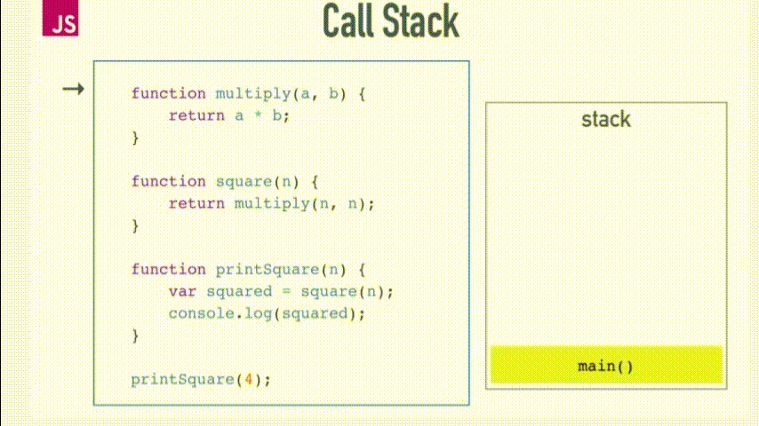
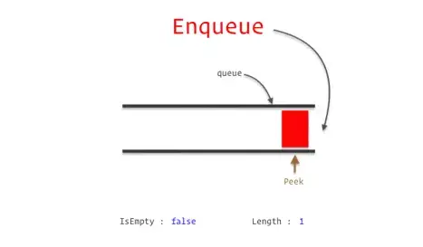
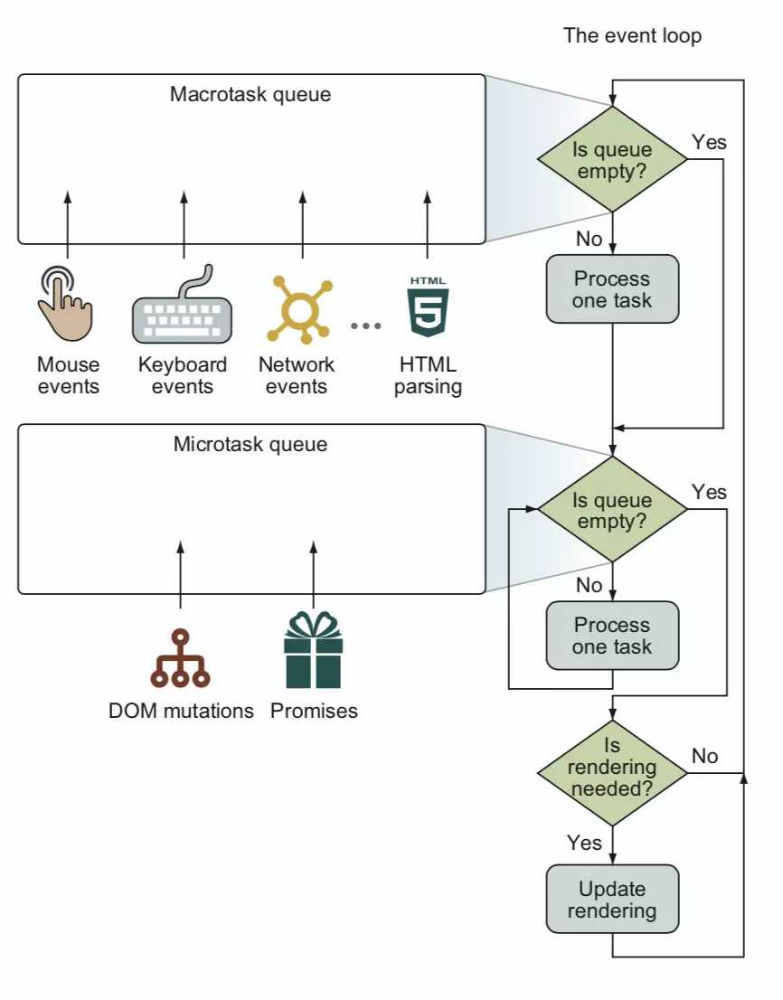
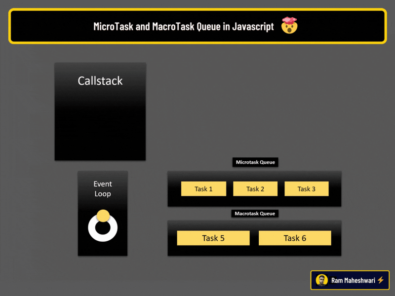
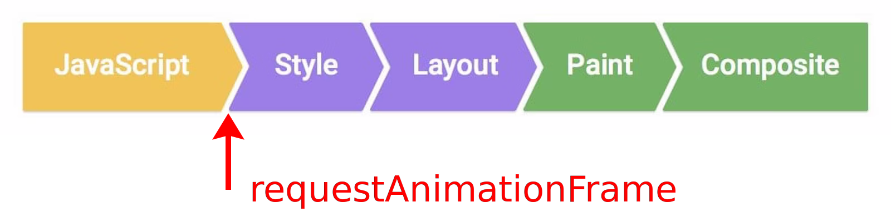

此為 event loop 系列文章 - 第 1 篇：
- Javascript 中的 event loop 及瀏覽器渲染機制
- 從程式碼角度來看 event loop
- 使用原生的 queueMicrotask 處理微任務
- Vue.nextTick() 中的 event loop
前言
event loop 是 js 中一個蠻重要的概念，雖然以前知道 宏任務 (macrotask) 及 微任務 (microtask) 優先級上的差別，但似乎一直不知道 event loop 與瀏覽器渲染間的關係，而大部分的文章都只單獨介紹 event loop 或是 瀏覽器渲染流程，所以寫了這篇文章統整 event loop 與 瀏覽器渲染 間的關聯性
event loop 的作用
以前端來說，在瀏覽器中使用者的畫面點擊、呼叫後端 api、window.addEventListener，這些全部都由 js 執行，但 js 是單線程的程式語言，同一時間就是只能做一件事，所以當事情同時發生時，需要讓 js 知道哪行程式碼是先被執行的、而接下來又該執行哪段程式碼，這個負責安排執行順序的東西，基本上就叫做 event loop
event loop 的宿主環境
嚴格來說 event loop 並不是定義在 js 上的東西，而是根據不同環境有不同的 event loop 規則，以瀏覽器來說就會有瀏覽器的 event loop 規則，而 nodejs 的話又會有另一套 nodejs 的 event loop 規則，今天這篇文章只探討瀏覽器的 event loop
Javascript 中的程式執行
js 中的程式，按照執行時機區分的話可以分為 同步執行 (sync) 以及 異步執行 (async)，同步執行 (sync) 的程式碼會被丟到 js 主線程(main thread) 中，從頭到尾不間斷的執行完，而 異步執行 (async) 的程式則是指那些之後才會執行的程式 (ex. 呼叫 api 會等伺服器資料回應後才執行後續的操作)，但特別需要強調的一點是，js 是單線程的程式，不論是 同步執行 (sync) 或是 異步執行 (async)，程式碼一定會在某一刻交由 js 主線程(main thread) 執行。
同步執行 (sync)
同步執行的程式會將每一段程式碼依序放入到 堆疊(stack) 裡面，再從最上層的 堆疊(stack) 挑出要運行的任務放入 js 主線程(main thread) 中執行
範例：
1 | function A() { |
- 首先整個
main script放入 堆疊(stack) 的最底層 - 將 堆疊(stack) 最上層需執行的任務
main script抓出，放入 js 主線程(main thread) 執行 main script執行到第 5 行，印出 main scriptmain script執行到第 6 行遇到函式A，將函式A放入 堆疊(stack) 中- 將第 1-3 行的
函式A放入 js 主線程(main thread) 執行 函式A執行完畢，印出 A，將函式 A移出 堆疊(stack)- 接續執行
main script - 第 6 行後整個
main script執行完成，將main script移出 堆疊(stack)

圖片來源: [學習筆記] JavaScript 的 Event Loop, Stack, Queue
異步執行 (async)
除了一氣呵成的同步執行程式以外，js 也有所謂的異步執行程式 (ex. call api、setTimeout)，以下面的例子來看，假設我們寫的程式有很多這種異步邏輯，每一個區塊看起來都很像馬上就要執行，那麼瀏覽器要怎麼判斷每一段程式碼的執行順序呢？ 此時需要的就是 event loop 來安排這些異步任務程式碼的執行順序
1 | setTimeout(() => { |
異步執行的任務
這些異步執行的程式，可以分為兩種： 宏任務 (macrotask) 及 微任務 (microtask)
- 宏任務 (macrotask)
在 HTML spec 的規範中，宏任務 (macrotask) 其實叫做 任務(task) ，但為了跟 微任務 (microtask) 有一個相對應的區分所以大部分的教學文章都加上了 宏(macro) 這個字，以下幾種方法都屬於 宏任務 (macrotask)
- 用
<script src="...">方式載入的程式碼 - setTimeout, setInterval
- 使用者交互事件 (ex. 滑鼠 click, 鍵盤 keydown 事件)
- 微任務 (microtask)
目前有的 微任務 (microtask) ：
- promise
- DOM mutations (MutaionObserver)
而不論是 宏任務 (macrotask) 或是 微任務 (microtask) 它們都是以 佇列(queue) 的資料結構存放，存放這兩種任務的 佇列(queue) 名稱，後面我分別稱呼它們為 宏任務佇列 (macrotask queue) 與 微任務佇列 (microtask queue)
圖片來源: Simple Explanation of Stack and Queue with JavaScript
範例：
1 | setTimeout(function timeoutCallback() { |
- 第 1 行的
setTimeout屬於 宏任務 (macrotask) ，所以timeoutCallback會被放入 宏任務佇列 (macrotask queue) 中等待之後執行 - 第 5 行的
Promise.resolve()屬於 微任務 (microtask) ，所以promiseCallback會被放入 微任務佇列 (microtask queue) 中等待之後執行
好的，目前為止我們知道了這些異步執行的程式們可以分為兩類 宏任務 (macrotask) 以及 微任務 (microtask) ，並且會被加入到各自的 佇列(queue) ，下一節我們會再進一步瞭解這些被加入到 佇列(queue) 中的任務們如何藉由 event loop 的安排最終丟入到 js 主線程(main thread) 執行
event loop 如何安排任務的執行順序
 圖片來源:
事件迴圈的基本概念
Javascript MicroTask vs MacroTask Queue - Visually Explained Through An Animation
搭配以上這兩張圖，我們可以看到 宏任務 (macrotask) 與 微任務 (microtask) 實際上用兩個不同的 queue 控制著任務的先後執行
- 宏任務 (macrotask) 會被放到 宏任務佇列 (macrotask queue) 裡
- 微任務 (microtask) 會被放到 微任務佇列 (microtask queue) 裡
而 宏任務佇列 (macrotask queue) 與 微任務佇列 (microtask queue) 會藉由 event loop 的安排，將任務依序丟往 堆疊(stack) 中，最後 js 主線程(main thread) 再以 同步執行 (sync) 的方式將 堆疊(stack) 中的任務執行完成
而從 event loop 的角度來看，是以下面的這個邏輯決定怎麼把任務丟到 堆疊(stack) 中執行：
- 檢查 宏任務佇列 (macrotask queue) 裡是否有 宏任務 (macrotask) 需要被執行：
1-1. 如果有的話就將最前面的 宏任務 (macrotask) 拿出來丟到 堆疊(stack) 執行，並前往 步驟 2.
1-2. 如果沒有的話，直接前往 步驟 2. - 檢查 微任務佇列 (microtask queue) 裡是否有 微任務 (microtask) 需要被執行：
2-1. 如果有的話將 目前所有 的 微任務 (microtask) 依序拿出來丟到 堆疊(stack) 執行，並前往 步驟 3.
2-2. 如果沒有的話，直接前往 步驟 3. - 是否需要渲染 UI 畫面：
3-1. 需要渲染的話，進行渲染畫面並回到 步驟 1.
3-2. 不需要渲染的話，直接回到 步驟 1.
下面我們直接用程式碼來看 event loop 運行的邏輯：
1 | setTimeout(() => { |
分析：
- 第 1 行的
setTimeout後的callback function最初被加入到 宏任務佇列 (macrotask queue) 裡，是第一個 宏任務 (macrotask) ，等待之後執行 - 第 4 行的
setTimeout後的callback function會接續加入到 宏任務佇列 (macrotask queue) 中，是第二個 宏任務 (macrotask) ，等待之後執行 - 第 8 行的
promise.resolve後的callback function會加入到 微任務佇列 (microtask queue) 裡，是第一個 微任務 (microtask) ，等待之後執行 - 第 11 行的
promise.resolve後的callback function會加入到 微任務佇列 (microtask queue) 裡，是第二個 微任務 (microtask) ，等待之後執行 - 第 14 行的
promise.resolve後的callback function會加入到 微任務佇列 (microtask queue) 裡，是第三個 微任務 (microtask) ，等待之後執行
結果：
如右上角的 .gif 動圖所示，即使兩個 setTimeout 在程式上的順序是先寫在前面的，但由於 微任務 (microtask) 的優先級高於 宏任務 (macrotask) ，所以 Promise.resolve() 後的結果會先被執行，最後才執行 setTimeout 的 宏任務 (macrotask)
1 | 'promise1' |
event loop 之後 - 渲染畫面
接著讓我們來看看 event loop 之後，瀏覽器怎麼進行畫面渲染：
圖片來源: CSS runtime performance
上圖左側的 JavaScript 代表了我們上面所討論的 宏任務 (macrotask) 與 微任務 (microtask) ，當 JavaScript 執行完成後，瀏覽器開始準備渲染畫面，畫面的渲染大致上切分成四個部分：
Style
計算每個 DOM element 的樣式 (color, margin 等)Layout
上面的 Style 計算完後，瀏覽器會知道每個 DOM element 該有的樣式，接著就會開始計算這些 element 佔用的空間，這包含位置、寬度等等Paint
開始針對網頁中的每個像素點進行繪製，包括顏色、陰影等等
requestAnimationFrame
最後特別提到的是 requestAnimationFrame，他的執行時機在 Style 之前，可以保證在每一幀的畫面渲染前執行，常用來做動畫效果或網頁 3D 場景的處理
1 | const dom = document.querySelector('div'); |
現在大部分的螢幕通常是以 60Hz 的頻率更新畫面，如此可以讓人眼察覺不到每一幀畫面的差別，從而做到順暢的動畫，因此瀏覽器中在每一幀更新畫面的時間約為 1/60 = 17ms，所以 animation 函式大約會每 17ms 就執行一次
event loop 的全貌
最後讓我們來看完整的 event loop：

圖片來源: Browser Event loop: micro and macro tasks, call stack, render queue: layout, paint, composite
整個完整的 event loop + 瀏覽器的畫面渲染流程如上圖所示，在一整圈的執行中，瀏覽器會盡量以 60Hz 的頻率渲染畫面，也就是說每一幀(圈)更新畫面的時間約為 1/60 = 17ms
最初從圖中左側開始，Javascript 會從 宏任務佇列 (macrotask queue) 挑出第一個 宏任務 (macrotask) 執行，接著執行完 微任務佇列 (microtask queue) 中所有的 微任務 (microtask)
在準備進行瀏覽器渲染前會執行
requestAnimationFrame進入瀏覽器渲染的流程：Style => Layout => Paint => Composite
渲染畫面後重新回到 步驟 1. 循環執行這一整圈的 event loop
參考資料
[筆記]-JavaScript Event Loop是什麼?Event Loop的3個重點
簡短的文章幫助快速的了解 event loopPicking the Right Tool for Maneuvering JavaScript’s Event Loop
作者寫了一些範例演示了 同步、異步 以及 宏任務 (macrotask)、微任務 (microtask) 的程式碼如何對畫面 UI 的堵塞造成不同影響我知道你懂 Event Loop，但你了解到多深？
從 HTML spec 的角度詳細探討 event loop 的執行順序瀏覽器轉譯/渲染(Browser Rendering)原理
轉譯效能
完整的介紹瀏覽器渲染的各個步驟CSS runtime performance
非常豐富生動的圖描繪出瀏覽器的渲染過程Browser Event loop: micro and macro tasks, call stack, render queue: layout, paint, composite
完整的從 event loop 一路介紹到瀏覽器渲染畫面的優質文章什么是 requestAnimationFrame
從 requestAnimationFrame 的角度出發，探討分別使用 requestAnimationFrame 及 setTimeout 當作計時器的差別